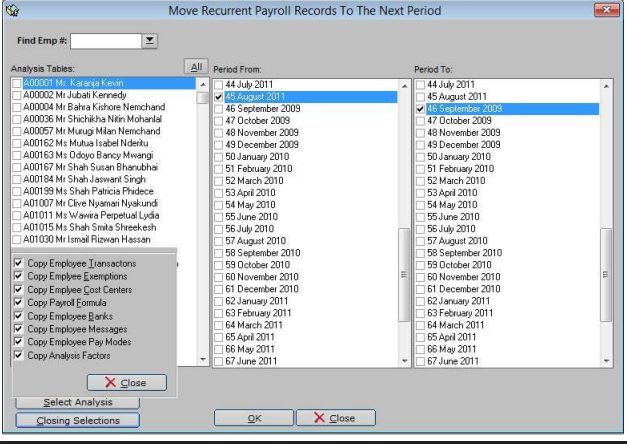

How to Close a Period and Move Records
Follow these steps to Close a Period and Move Records:
-
Ensure payroll processing is done for the period you want to close.Under the Utilities menu, select Period closing (move records).
-
This should bring you to a pop-up window similar to the Figure below. Select all employees, and then choose the period closing (active)

and the new period to move to(next)e.g. to move records from August to September,
then the active period should be August, and the next period September. Click to view closing sections". -
Enter your email address and password, then click "Next"Then click on Ok to close the period. A period once closed is blocked from edit or manipulation. Hence the data cannot be modified or edited.
-
To confirm closed periods, select the period closing module under utilities: e.g. December above reads true hence it is closed. If False, then it is still open.